Prokudin-Gorskii Collection
Each glass plate is one tall grayscale image holding three exposures in a row: blue,
green, red. The pipeline splits every plate into equal thirds, then lines up the green
and red channels with the fixed blue channel. It does this by testing every integer
(dy, dx) shift in a ±15px window with np.roll, scoring
each one with normalized cross-correlation (NCC) on a cropped patch so the wraparound
edge from np.roll doesn't throw off the score. NCC was used instead of
L2/SSD because it adjusts for brightness and contrast differences between the R/G/B
filters, which don't always expose the same way.
±15px works for the low-res JPEGs, but the full-resolution TIFs need true
offsets as large as 180px. Brute-forcing that at full resolution isn't possible with a
fixed window, and it's also too slow (a plain full-image search took over 4 minutes
for one channel). align_pyramid() solves both problems. It shrinks the
image by half repeatedly until it's under about 400px on its short side, aligns at
that small scale with align_single_scale() (where ±15px covers a
much bigger area), then works back up, doubling the estimate and refining it with
another small search at each step.
For speed, align_single_scale() doesn't roll the full image for each of
the roughly 961 candidate shifts. Instead it cuts out one small, centered patch up
front, with extra padding, and reads every candidate shift straight out of that patch
through array slicing. This gives the same result as rolling and cropping the whole
image, but only for shifts inside the search window. It cut one full-resolution
alignment from about 4 minutes to under a minute.
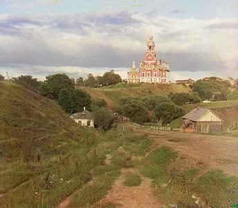
G: (5, 2) R: (12, 3)
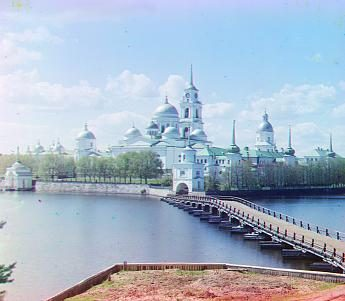
G: (-3, 2) R: (3, 2)
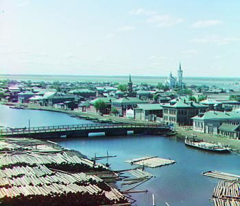
G: (3, 3) R: (6, 3)
All three low-res plates align cleanly with the same fixed ±15px NCC search and no per-image tuning. Offsets are small (at most 12px) and well inside the search window. No ghosting or fringing remains once the channels are shifted; edges in cathedral and tobolsk line up crisply.
G: (5, 2) R: (12, 3)
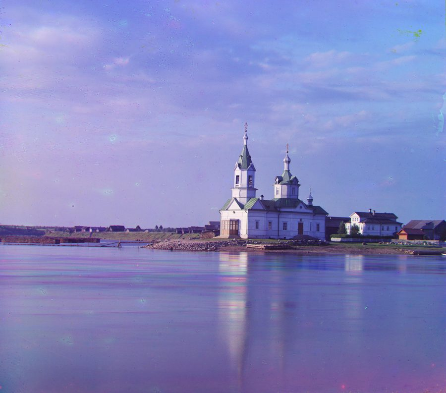
G: (24, 4) R: (58, -4)
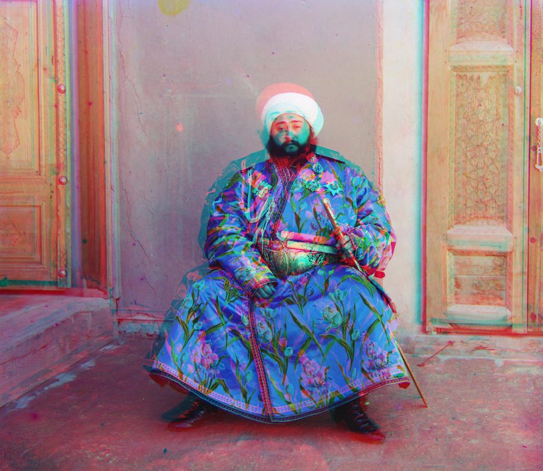
G: (48, 24) R: (47, 6)
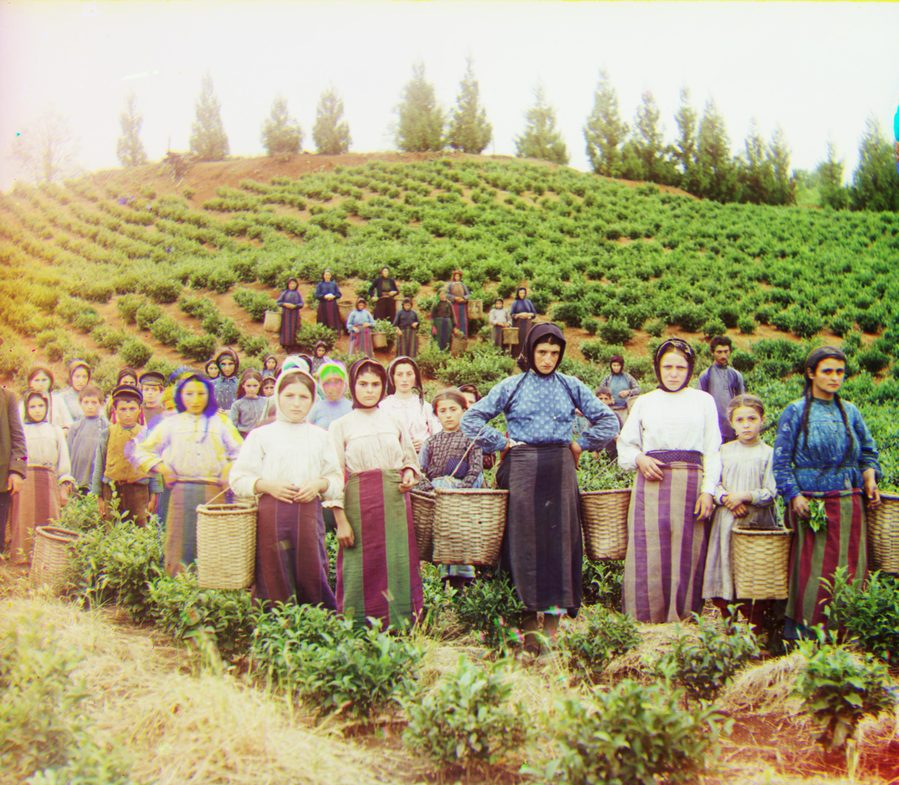
G: (59, 18) R: (124, 15)
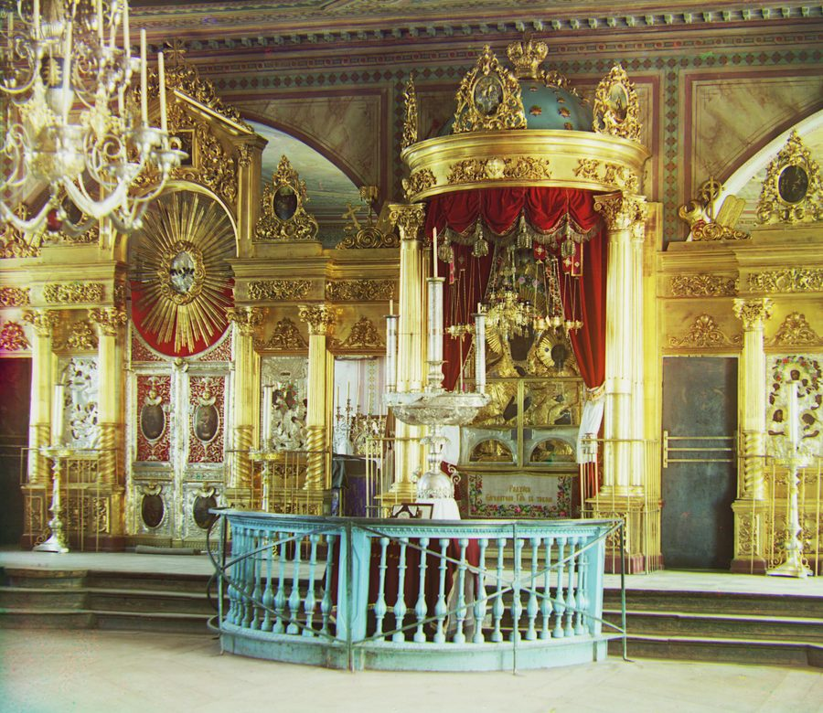
G: (41, 18) R: (90, 23)
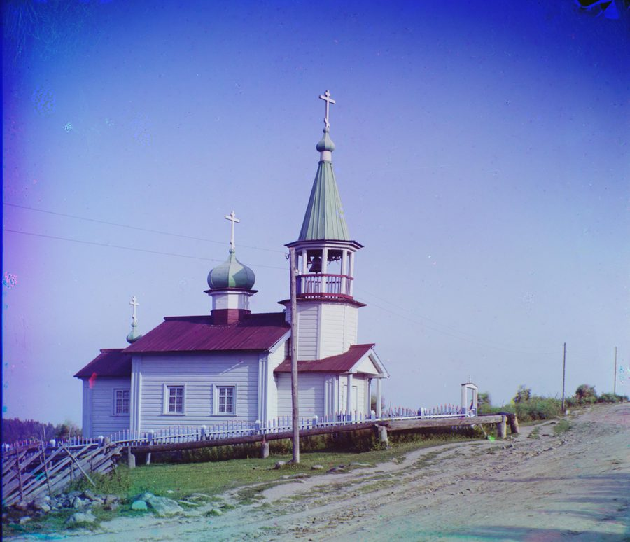
G: (41, 7) R: (132, 11)
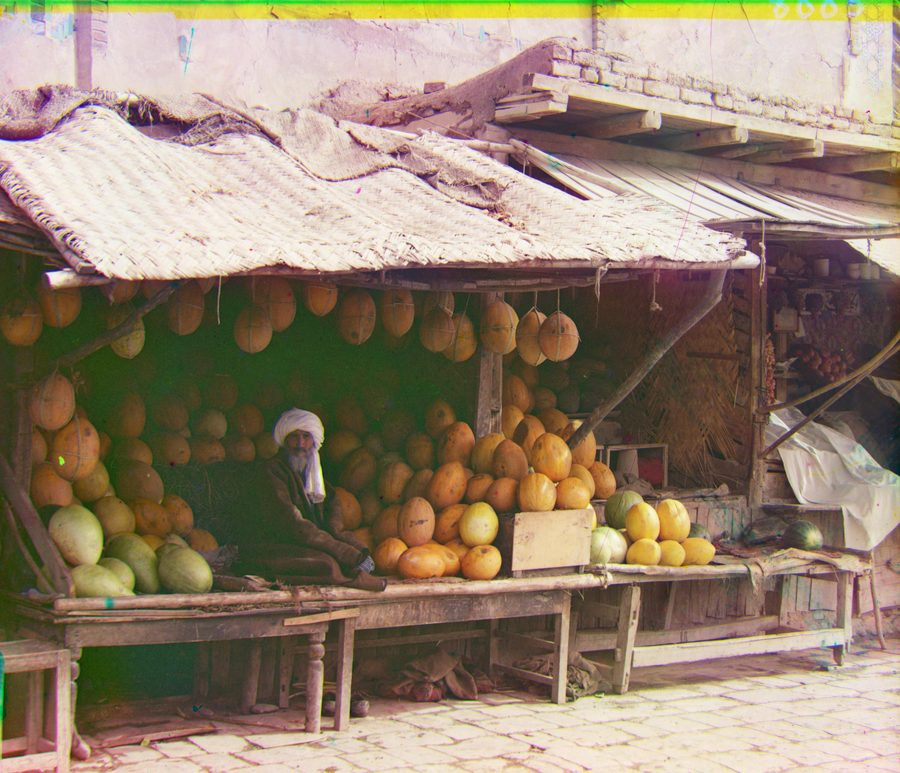
G: (83, 10) R: (180, 13)
G: (-3, 2) R: (3, 2)
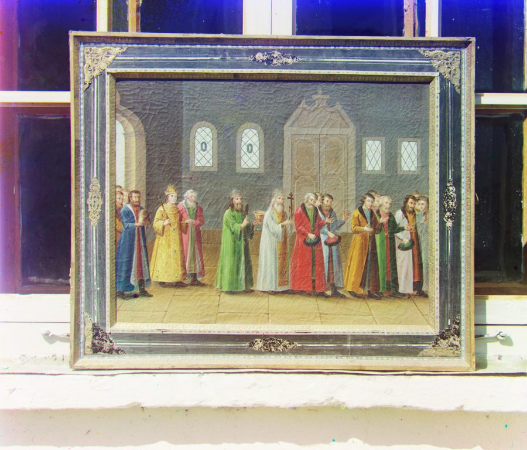
G: (27, 4) R: (69, 7)
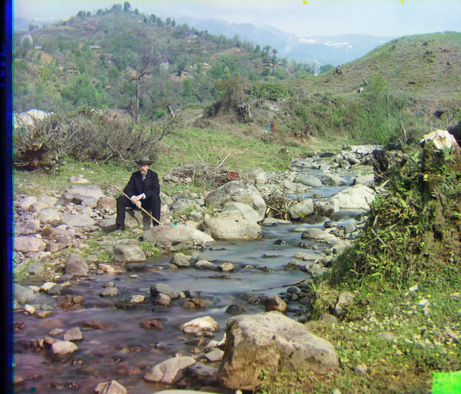
G: (77, 29) R: (175, 37)
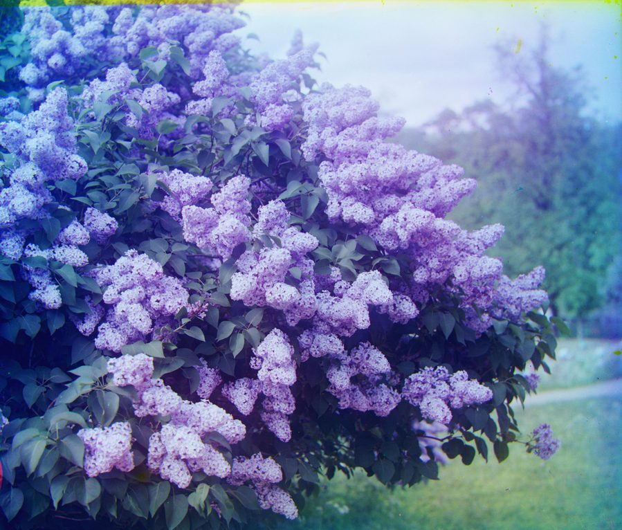
G: (49, -5) R: (96, -23)
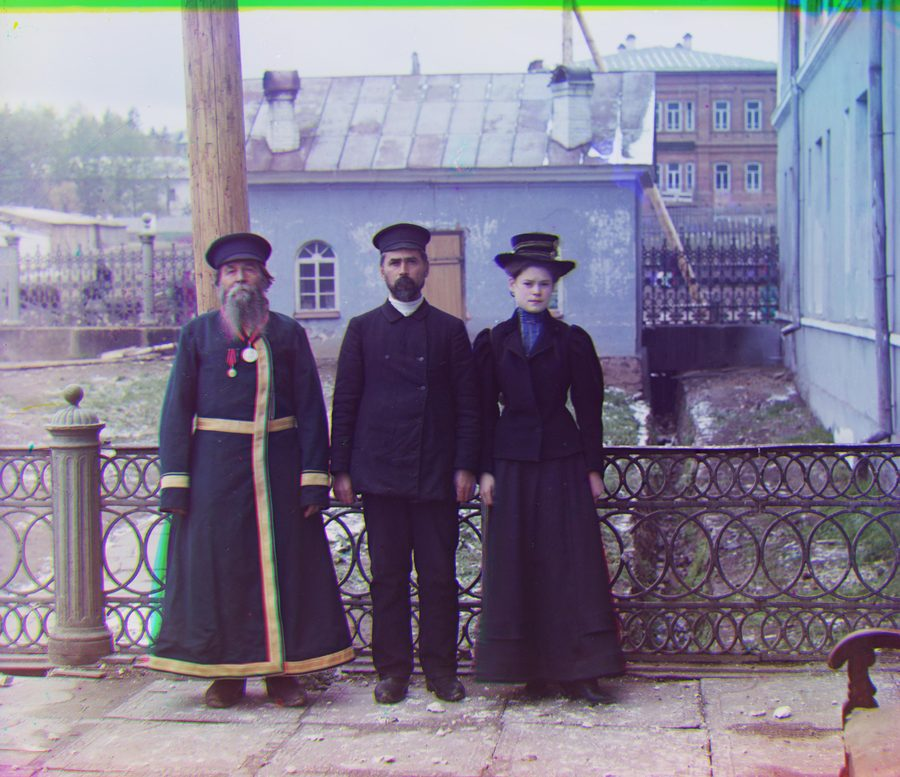
G: (50, 18) R: (110, 14)
G: (3, 3) R: (6, 3)
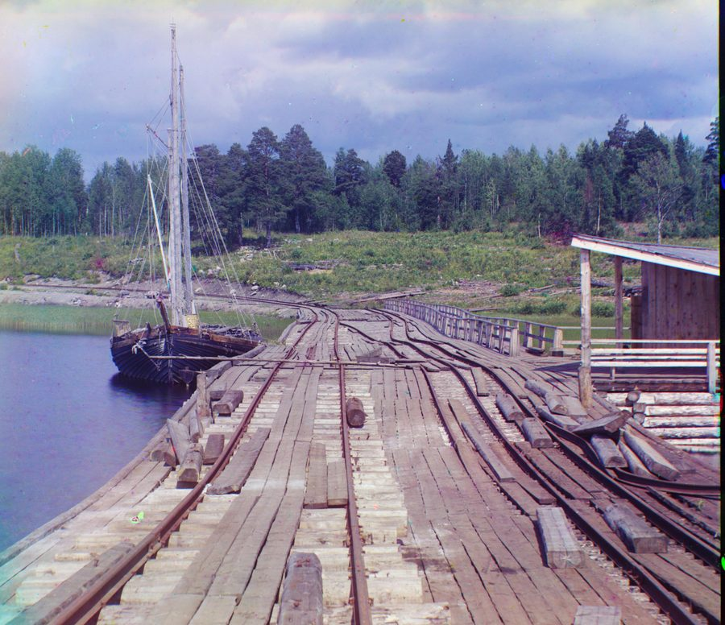
G: (15, -7) R: (81, -15)
All 14 provided plates were aligned with the exact same fixed pyramid settings (±15px search window per level, downsampling by 2x, stopping once the short side drops below about 400px), with no per-image tuning. True offsets vary a lot: the 3 low-res JPEGs get the same result as the single-scale search above, since the pyramid just reduces to one step for them. The full-res TIFs need offsets up to 180px (melons.tif, red channel), which a ±15px search alone could never reach.
13 of the 14 plates align cleanly. emir.tif is the one exception; see the failure analysis below.
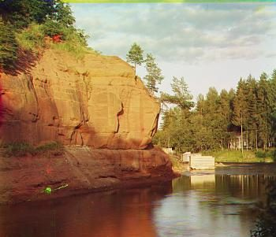
G: (4, 0) R: (15, -1)
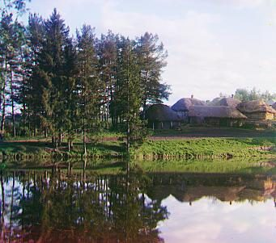
G: (-3, 1) R: (-4, 1)
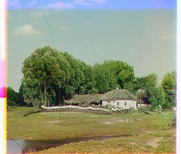
G: (3, 2) R: (12, 4)
Picked from the LOC Prokudin-Gorskii collection for content different from the provided set: natural rock, water, and foliage instead of architecture or portraits. All three align cleanly with the same fixed parameters as the rest of the dataset.
A fourth plate, a sunset over open water, was tried first and dropped. Almost the whole frame was smooth sky and water, with the only real texture (waves, a thin horizon line, a few boats) in a narrow strip at the bottom, away from where a centered patch looks. With so little to compare, NCC had nothing reliable to match, and the search stayed stuck at the edge of the ±15px window no matter how wide the window was. It's a low-texture version of the same problem as emir.tif below. It was swapped for hillside_home.jpg instead of fixed, since a general "pick the patch with the most texture" rule tended to pick repetitive regions instead, which made other images worse.
G: (48, 24) R: (47, 6)
emir.tif is the one plate (of 17) that doesn't align cleanly, even with the same fixed pyramid search used everywhere else. The subject's robe has a dense, repeating floral pattern that covers most of the frame. Normalized cross-correlation only measures how well two patches match. It can't tell a true alignment from one that's shifted by exactly one repeat of the pattern, so a shift that lines up flowers with flowers scores just as well as the real answer.
This was checked directly: running the search again with a much larger patch changed
the reported shift a lot (the red channel's offset moved from dx=6 to
dx=44), but the ghosting looked the same either way. If the search window
had just been too small, a bigger one would have fixed it. Instead it found a
different wrong answer, which shows the problem is the repeating pattern
itself, not the search settings. The assignment allows one failed image out of 17, so
this is it.